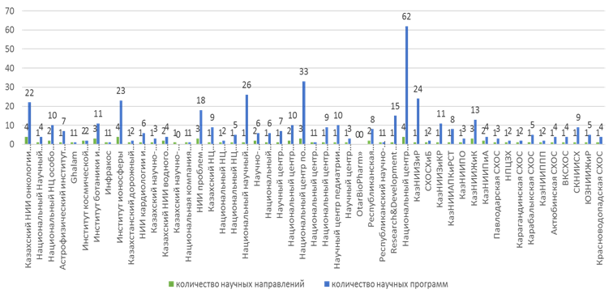

Íàöèîíàëüíàÿ àêàäåìèÿ íàóê Ðåñïóáëèêè Êàçàõñòàí ïðè Ïðåçèäåíòå Ðåñïóáëèêè Êàçàõñòàí â öåëÿõ èçó÷åíèÿ íàó÷íîãî ïîòåíöèàëà íàó÷íûõ îðãàíèçàöèé ïðîâåëà àíàëèç ïîëó÷åííîé èíôîðìàöèè îò ïîäâåäîìñòâåííûõ íàó÷íûõ îðãàíèçàöèé îòðàñëåâûõ ãîñóäàðñòâåííûõ îðãàíîâ, âêëþ÷àÿ äî÷åðíèå è ñòðóêòóðíûå èíñòèòóòû îðãàíèçàöèé âûñøåãî è ïîñëåâóçîâñêîãî îáðàçîâàíèÿ (ÌÍÂÎ ÐÊ, ÌÖÐÈÀÏ ÐÊ, ÌÇ ÐÊ, ÌÑÕ ÐÊ, ÌÝÏÐ ÐÊ, ÌÝ ÐÊ, ÌÈÈÐ ÐÊ è äð.).
Öåëü èññëåäîâàíèÿ – îöåíèòü:
- êàäðîâûé ïîòåíöèàë íàó÷íûõ ó÷ðåæäåíèé;
- àêòóàëüíîñòü è ïåðñïåêòèâíîñòü íàó÷íûõ èññëåäîâàíèé;
- ðåçóëüòàòèâíîñòü íàó÷íî-òåõíè÷åñêîé äåÿòåëüíîñòè (ÍÒÄ);
- êîììåðöèàëèçàöèþ ðåçóëüòàòîâ èññëåäîâàíèé è ðàçðàáîòîê;
- âõîæäåíèå â ðåéòèíãè ýêñïåðòíûõ öåíòðîâ;
- äåÿòåëüíîñòü ÍÈÈ è ÍÖ, ïðîâåäåííóþ óïîëíîìî÷åííûì îðãàíîì â ñôåðå íàóêè.
Ðàçâèòèå íàóêè ÿâëÿåòñÿ îäíèì èç ñòðàòåãè÷åñêèõ ïðèîðèòåòîâ äëÿ îáåñïå÷åíèÿ íàöèîíàëüíîé áåçîïàñíîñòè è äîñòèæåíèÿ íîâîãî êà÷åñòâà íàó÷íî-òåõíîëîãè÷åñêîãî è ýêîíîìè÷åñêîãî ðàçâèòèÿ ñòðàíû.
Äëÿ ïðîâåäåíèÿ àíàëèçà áûëè ïðåäñòàâëåíû àííîòàöèîííûå îò÷åòû îò 51 íàó÷íîé îðãàíèçàöèè (ïðèëîæåíèå 1.5.1).
Àíàëèç ïîêàçàë, ÷òî íàó÷íûå îðãàíèçàöèè:
- îáëàäàþò íåîáõîäèìûì êàäðîâûì è íàó÷íûì ïîòåíöèàëîì;
- ðóêîâîäñòâóþòñÿ àêòóàëüíûìè è ïåðñïåêòèâíûìè ïðèîðèòåòíûìè íàïðàâëåíèÿìè íàó÷íûõ èññëåäîâàíèé, êîòîðûå ñîîòâåòñòâóþò îñíîâíûì ïðèîðèòåòíûì íàïðàâëåíèÿì íàóêè, îïðåäåëåííûì ÂÍÒÊ ïðè Ïðàâèòåëüñòâå ÐÊ;
- äîáèâàþòñÿ ðåçóëüòàòèâíîñòè íàó÷íî-òåõíè÷åñêîé äåÿòåëüíîñòè, î ÷åì ñâèäåòåëüñòâóþò ïóáëèêàöèè, èíäåêñèðóåìûå â àâòîðèòåòíûõ çàðóáåæíûõ ðåñóðñàõ è îòå÷åñòâåííûõ æóðíàëàõ, à òàêæå ìîíîãðàôèè, ó÷åáíèêè, ó÷åáíûå ïîñîáèÿ;
- îñóùåñòâëÿþò êîììåðöèàëèçàöèþ ðåçóëüòàòîâ èññëåäîâàíèé è ðàçðàáîòîê.
Áàçà äàííûõ âêëþ÷àåò 51 îðãàíèçàöèþ, êîòîðûå ïðèíàäëåæàò ê 7 ìèíèñòåðñòâàì. Íàèáîëüøàÿ èõ ÷àñòü íàõîäèòñÿ â âåäåíèè Ìèíèñòåðñòâà çäðàâîîõðàíåíèÿ – 20, Ìèíèñòåðñòâà ñåëüñêîãî õîçÿéñòâà – 17. Ê Ìèíèñòåðñòâó öèôðîâîãî ðàçâèòèÿ, èííîâàöèé è àýðîêîñìè÷åñêîé ïðîìûøëåííîñòè îòíîñÿòñÿ 7 îðãàíèçàöèé, Ìèíèñòåðñòâó ïðîìûøëåííîñòè è ñòðîèòåëüñòâà – 3, Ìèíèñòåðñòâó ýêîëîãèè è ïðèðîäíûõ ðåñóðñîâ – 2, Ìèíèñòåðñòâó òðàíñïîðòà – 1, Ìèíèñòåðñòâó âîäíûõ ðåñóðñîâ è èððèãàöèè – 1 îðãàíèçàöèÿ (Ðèñ. 1.5.1).
Ðèñóíîê 1.5.1 Ïðèíàäëåæíîñòü íàó÷íûõ îðãàíèçàöèé ïî ìèíèñòåðñòâàì
Àíàëèç ïîêàçûâàåò, ÷òî íàèáîëåå âûñîêàÿ îñòåïåíåííîñòü â íàó÷íûõ îðãàíèçàöèÿõ Ìèíèñòåðñòâà ïðîìûøëåííîñòè è ñòðîèòåëüñòâà (3 îðãàíèçàöèè) – 40,6%, Ìèíèñòåðñòâà ñåëüñêîãî õîçÿéñòâà (17) – 38,1%.
 íàó÷íûõ îðãàíèçàöèÿõ Ìèíèñòåðñòâà çäðàâîîõðàíåíèÿ (20) îñòåïåíåííîñòü ñîñòàâèëà 28,6%, Ìèíèñòåðñòâà âîäíûõ ðåñóðñîâ è èððèãàöèè (1) – 26,8%%, Ìèíèñòåðñòâà öèôðîâîãî ðàçâèòèÿ, èííîâàöèé è àýðîêîñìè÷åñêîé ïðîìûøëåííîñòè (7) – 25,7%, Ìèíèñòåðñòâà ýêîëîãèè è ïðèðîäíûõ ðåñóðñîâ (2) – 23,4%.
Ñàìàÿ íèçêàÿ îñòåïåíåííîñòü ïî Ìèíèñòåðñòâó òðàíñïîðòà (1) – 6,5%.
Íàèáîëåå âûñîêîãî óðîâíÿ äîñòèãëè îðãàíèçàöèè ÌÑÕ ÐÊ. Èç 17 îðãàíèçàöèé 8 äîñòèãëè TRL-9, 6 - TRL-8 è 1 - TRL-7.
Ïî Ìèíèñòåðñòâó çäðàâîîõðàíåíèÿ: TRL-9 – 2; TRL-8 – 3; TRL-7 – 7; TRL-6 – 3; TRL-4 – 3 îðãàíèçàöèè.
Ìèíèñòåðñòâî öèôðîâîãî ðàçâèòèÿ, èííîâàöèé è àýðîêîñìè÷åñêîé ïðîìûøëåííîñòè: TRL-9 – 1; TRL-8 – 1; TRL-7 – 3; TRL-6 – 1; TRL-5 – 1 îðãàíèçàöèÿ.
Ìèíèñòåðñòâî ïðîìûøëåííîñòè è ñòðîèòåëüñòâà: TRL-9 – 1, TRL-8 – 1 îðãàíèçàöèÿ.
Ìèíèñòåðñòâî ýêîëîãèè è ïðèðîäíûõ ðåñóðñîâ: TRL-9 – 2 îðãàíèçàöèè.
Ìèíèñòåðñòâî âîäíûõ ðåñóðñîâ è èððèãàöèè: TRL-9 – 1 îðãàíèçàöèÿ.
Ìèíèñòåðñòâî òðàíñïîðòà: TRL-7 – 1 îðãàíèçàöèÿ.
Ìèíèñòåðñòâî çäðàâîîõðàíåíèÿ:
Óðîâåíü TRL-9 – ÊàçÍÈÂÈ, ÐÊÌ
TRL-8 – ÍÍÈÏÁÁ, ÍÖÁ, ÍÍÖÎÎÈ
TRL-7 – ÍÍÖÒÎ, ÍÍÖÐÇ, ÍÏÖÒ, ÍÈÈÊèÂÁ, ÍÖÀÃèÏ, ÍÖÏèÄÕ, ÊàçÍÈÈÎèÐ
TRL-6 – ÍÍÎÖ, ÐÍÏÏÇ, ÍÖÏÏ
TRL-4 ÍÍÖÔ, ÍÖÎÇ, ÊÍÖÄèÇ
Íàèáîëåå âûñîêàÿ îñòåïåíåííîñòü â ÐÃÏ íà ÏÕ «Íàöèîíàëüíûé íàó÷íûé öåíòð òðàâìàòîëîãèè è îðòîïåäèè èìåíè àêàäåìèêà Áàòïåíîâà Í.Ä.» - 77,8%.
 ÀÎ «Íàó÷íûé öåíòð ïåäèàòðèè è äåòñêîé õèðóðãèè» - 70%, ÐÃÏ íà ÏÕ «Ðåñïóáëèêàíñêèé íàó÷íî-ïðàêòè÷åñêèé öåíòð ïñèõè÷åñêîãî çäîðîâüÿ» - 66,7%, ÐÃÏ íà ÏÕ «Êàçàõñêèé íàó÷íûé öåíòð äåðìàòîëîãèè è èíôåêöèîííûõ çàáîëåâàíèé» - 62,5%, ÀÎ «Êàçàõñêèé íàó÷íî-èññëåäîâàòåëüñêèé èíñòèòóò îíêîëîãèè è ðàäèîëîãèè» - 60,7%, ÒÎÎ «Êàçàõñêèé íàó÷íî-èññëåäîâàòåëüñêèé âåòåðèíàðíûé èíñòèòóò» - 59,7%, ÐÃÏ íà ÏÕ «Íàöèîíàëüíûé íàó÷íûé öåíòð îñîáî îïàñíûõ èíôåêöèé èì. Ì.Àéêèìáàåâà» - 58,5%, ÐÃÏ íà ÏÕ "Íàöèîíàëüíûé íàó÷íûé öåíòð ðàçâèòèÿ çäðàâîîõðàíåíèÿ èìåíè Ñàëèäàò Êàèðáåêîâîé" - 54,5%, ÒÎÎ «Íàöèîíàëüíûé Íàó÷íûé Îíêîëîãè÷åñêèé Öåíòð» - 52,4%.
Íå âûñîêàÿ îñòåïåíåííîñòü â ÐÃÏ íà ÏÕ «Íàöèîíàëüíûé íàó÷íûé öåíòð ôòèçèîïóëüìîíîëîãèè» - 43,2%, ÒÎÎ «Ðåñïóáëèêàíñêàÿ êîëëåêöèÿ ìèêðîîðãàíèçìîâ» - 33,3%, ÐÃÏ íà ÏÕ «Íàöèîíàëüíûé Ïðîèçâîäñòâåííûé Öåíòð Òðàíñôóçèîëîãèè» - 28%, ÒÎÎ «Íàöèîíàëüíûé öåíòð áèîòåõíîëîãèè» - 26,8%, ÀÎ «Íàó÷íî-èññëåäîâàòåëüñêèé èíñòèòóò êàðäèîëîãèè è âíóòðåííèõ áîëåçíåé» - 25%
Ñàìàÿ íèçêàÿ îñòåïåíåííîñòü â ÐÃÏ íà ÏÕ «Íàöèîíàëüíûé öåíòð îáùåñòâåííîãî çäðàâîîõðàíåíèÿ» - 21%, ÀÎ «Íàó÷íûé öåíòð ïðîòèâîèíôåêöèîííûõ ïðåïàðàòîâ» - 19,8%, ÐÃÏ «Íàó÷íî-èññëåäîâàòåëüñêèé èíñòèòóò ïðîáëåì áèîëîãè÷åñêîé áåçîïàñíîñòè» - 14,2%, ÀÎ «Íàó÷íûé öåíòð àêóøåðñòâà, ãèíåêîëîãèè è ïåðèíàòîëîãèè» - 5,6%, ÒÎÎ «OtarBioPharm» - 1,9%.
Äàííûå ïî ÀÎ «Íàöèîíàëüíûé öåíòð íåéðîõèðóðãèè» ïðåäñòàâëåíû íå ïîëíîñòüþ.
Ìèíèñòåðñòâî ñåëüñêîãî õîçÿéñòâà:

Óðîâåíü TRL-9 – ÍÏÖÇÕ, ÂÊÑÕÎÑ, ÊàçÍÈÈÇèÐ, ÊàçÍÈÈÏÏÏ, Àêòþáèíñêàÿ ÑÕÎÑ, ÑÊÍÈÈÑÕ, ÊàçÍÈÈÇèÊÐ, ÑÕÎÑ ÕèÁ.
TRL-8 – ÊàçõÍÈÈÝÀÏÊèÐÑÒ, ÞÇÍÈÈÆèÐ, ÊàçÍÈÈÆèÊ, Êàðàãàíäèíñêàÿ ÑÕÎÑ, ÊàçÍÈÈÏÎ, Êðàñíîâîäîïàäñêàÿ ÑÕÎÑ.
TRL-7 – ÊàçÍÈÈÏÀ.
Ñðåäè íàó÷íûõ îðãàíèçàöèé ÌÑÕ ñàìàÿ âûñîêàÿ îñòåïåíåííîñòü â ÒÎÎ «Êàçàõñêèé ÍÈÈ çåìëåäåëèÿ è ðàñòåíèåâîäñòâà» - 55,1%, ÒÎÎ «Íàó÷íî-ïðîèçâîäñòâåííûé öåíòð çåðíîâîãî õîçÿéñòâà èì. À.È. Áàðàåâà» - 54,3%, ÒÎÎ «Êàçàõñêèé íàó÷íî-èññëåäîâàòåëüñêèé èíñòèòóò ïî÷âîâåäåíèÿ è àãðîõèìèè èì.Ó.Ó. Óñïàíîâà» - 54,2%, ÒÎÎ «Àêòþáèñêàÿ ñåëüñêîõîçÿéñòâåííàÿ îïûòíàÿ ñòàíöèÿ» - 50%, ÒÎÎ «Âîñòî÷íî-Êàçàõñòàíñêàÿ ñåëüñêîõîçÿéñòâåííàÿ îïûòíàÿ ñòàíöèÿ» - 50%, ÒÎÎ «Þãî-Çàïàäíûé íàó÷íî-èññëåäîâàòåëüñêèé èíñòèòóò æèâîòíîâîäñòâà è ðàñòåíèåâîäñòâà - 46,9%,
 ÒÎÎ «Êàçàõñêèé íàó÷íî-èññëåäîâàòåëüñêèé èíñòèòóò ïëîäîîâîùåâîäñòâà îñòåïåíåííîñòü ñîñòàâëÿåò 39,4%, ÒÎÎ «Êàçàõñêèé íàó÷íî-èññëåäîâàòåëüñêèé èíñòèòóò æèâîòíîâîäñòâà è êîðìîïðîèçâîäñòâà» - 38,9%, ÒÎÎ «Ñåâåðî-Êàçàõñòàíñêèé íàó÷íî-èññëåäîâàòåëüñêèé èíñòèòóò ñåëüñêîãî õîçÿéñòâà» - 35%, ÒÎÎ «Êàçàõñêèé íàó÷íî-èññëåäîâàòåëüñêèé èíñòèòóò ïåðåðàáàòûâàþùåé è ïèùåâîé ïðîìûøëåííîñòè» - 32%, ÒÎÎ «Êàçàõñêèé íàó÷íî-èññëåäîâàòåëüñêèé èíñòèòóò çàùèòû è êàðàíòèíà ðàñòåíèé èìåíè Æ. Æèåìáàåâà» - 29%, ÒÎÎ «Êðàñíîâîäîïàäñêàÿ ñåëüñêîõîçÿéñòâåííàÿ îïûòíàÿ ñòàíöèÿ» - 25%, ÒÎÎ «Êàðàãàíäèíñêàÿ ñåëüñêîõîçÿéñòâåííàÿ îïûòíàÿ ñòàíöèÿ èìåíè À.Ô.Õðèñòåíêî» - 20%.
Ñàìàÿ íèçêàÿ îñòåïåíåííîñòü â ÒÎÎ «Êàçàõñêèé íàó÷íî-èññëåäîâàòåëüñêèé èíñòèòóò ýêîíîìèêè ÀÏÊ è ðàçâèòèÿ ñåëüñêèõ òåððèòîðèé» - 15%, ÒÎÎ «Ñåëüñêîõîçÿéñòâåííàÿ îïûòíàÿ ñòàíöèÿ õëîïêîâîäñòâà è áàõ÷åâîäñòâà» - 11,4%.
Ïî ÒÎÎ «Ïàâëîäàðñêàÿ ñåëüñêîõîçÿéñòâåííàÿ îïûòíàÿ ñòàíöèÿ» è ÒÎÎ «Êàðàáàëûêñêàÿ ñåëüñêîõîçÿéñòâåííàÿ îïûòíàÿ ñòàíöèÿ» äàííûå íå ïðåäñòàâëåíû.

Ìèíèñòåðñòâî öèôðîâîãî ðàçâèòèÿ, èííîâàöèé è àýðîêîñìè÷åñêîé ïðîìûøëåííîñòè:
TRL-9 – ÈÊÒÒ
TRL-8 – ÍÖÊÈÒ
TRL-7 – Èîíîñôåðà, Ghalam, ÊàçÊîñìîñ
TRL-6 – ÀÔÈÔ
TRL-5 - Èíôðàêîñ.
Ñàìàÿ âûñîêàÿ îñòåïåíåííîñòü ñðåäè íàó÷íûõ îðãàíèçàöèé ÌÖÐÈÀÏ â ÒÎÎ «Èíñòèòóò èîíîñôåðû» - 46%, ÒÎÎ «Àñòðîôèçè÷åñêèé èíñòèòóò èìåíè Â.Ã. Ôåñåíêîâà» - 33,3%, ÀÎ "Íàöèîíàëüíûé öåíòð êîñìè÷åñêèõ èññëåäîâàíèé è òåõíîëîãèé" - 32,5%, ÄÒÎÎ «Èíñòèòóò êîñìè÷åñêîé òåõíèêè è òåõíîëîãèé» - 29,2%.
Ñàìàÿ íèçêàÿ îñòåïåíåííîñòü â Íàöèîíàëüíîé êîìïàíèè «Êàçêîñìîñ» - 7,7%, ÒÎÎ «Ghalam» - 13%, ÐÃÏ «Èíôðàêîñ» - 16,1%.
Ìèíèñòåðñòâî ïðîìûøëåííîñòè è ñòðîèòåëüñòâà:
TRL-9 – ÍÖÊÏÌÑ
TRL-8 – R&D ÖÊÈ
Ñàìàÿ âûñîêàÿ îñòåïåíåííîñòü â ÐÃÏ «Íàöèîíàëüíûé öåíòð ïî êîìïëåêñíîé ïåðåðàáîòêå ìèíåðàëüíîãî ñûðüÿ» - 44,2%, ñàìàÿ íèçêàÿ – â ÒÎÎ «Research&Development öåíòð «Êàçàõñòàí èíæèíèðèíã» - 16,1%.
Ïî ÀÎ "Êàçàõñêèé íàó÷íî-èññëåäîâàòåëüñêèé è ïðîåêòíûé èíñòèòóò ñòðîèòåëüñòâà è àðõèòåêòóðû" ïîëíûå äàííûå íå ïðåäñòàâëåíû.
Ìèíèñòåðñòâî ýêîëîãèè è ïðèðîäíûõ ðåñóðñîâ:
TRL-9 – ÈÁÔ, ÍÏÖÐÕ
 îðãàíèçàöèÿõ ÌÝÏÐ îñòåïåíåííîñòü íå âûñîêàÿ – â ÐÃÏ íà ÏÕ «Èíñòèòóò áîòàíèêè è ôèòîèíòðîäóêöèè» - 28,1%, ÒÎÎ «Íàó÷íî-ïðîèçâîäñòâåííûé öåíòð ðûáíîãî õîçÿéñòâà» - 16,7%.
Ìèíèñòåðñòâî âîäíûõ ðåñóðñîâ è èððèãàöèè:
TRL-9 – ÊàçÍÈÈÂÕ
 ÒÎÎ «Êàçàõñêèé íàó÷íî – èññëåäîâàòåëüñêèé èíñòèòóò âîäíîãî õîçÿéñòâà» îñòåïåíåííîñòü ñîñòàâëÿåò 26,8%.
Ìèíèñòåðñòâî òðàíñïîðòà:
TRL-7 - ÊàçÄîðÍÈÈ
 ÀÎ «Êàçàõñòàíñêèé äîðîæíûé íàó÷íî-èññëåäîâàòåëüñêèé èíñòèòóò» îñòåïåíåííîñòü íèçêàÿ - 6,5 %.
1.5.1 Íàó÷íûé ïîòåíöèàë îðãàíèçàöèé
Êàäðîâûé ïîòåíöèàë, êâàëèôèêàöèÿ íàó÷íûõ êàäðîâ
1. Íàó÷íî-èññëåäîâàòåëüñêèå îðãàíèçàöèè îáëàäàþò íåîáõîäèìûì êàäðîâûì ïîòåíöèàëîì äëÿ âûïîëíåíèÿ ÍÈÎÊÐ: èìåþò äîñòàòî÷íîå êîëè÷åñòâî äîêòîðîâ, êàíäèäàòîâ íàóê, äîêòîðîâ PhD è äðóãèõ íàó÷íûõ ñîòðóäíèêîâ.
Íàèáîëåå êðóïíûìè íàó÷íûìè îðãàíèçàöèÿìè ÿâëÿþòñÿ: ÒÎÎ «Íàöèîíàëüíûé Íàó÷íûé Îíêîëîãè÷åñêèé Öåíòð» - øòàòíàÿ ÷èñëåííîñòü ñîñòàâëÿåò 1073 ÷åë., ÀÎ «Íàó÷íûé öåíòð ïåäèàòðèè è äåòñêîé õèðóðãèè» - 906 ÷åë., ÐÃÏ íà ÏÕ "Íàöèîíàëüíûé íàó÷íûé öåíòð ðàçâèòèÿ çäðàâîîõðàíåíèÿ èìåíè Ñàëèäàò Êàèðáåêîâîé" - 677 ÷åë., ÐÃÏ «Íàöèîíàëüíûé öåíòð ïî êîìïëåêñíîé ïåðåðàáîòêå ìèíåðàëüíîãî ñûðüÿ Ðåñïóáëèêè Êàçàõñòàí» - 639 ÷åë., ÀÎ Íàó÷íûé öåíòð àêóøåðñòâà, ãèíåêîëîãèè è ïåðèíàòîëîãèè» - 460 ÷åë., ÐÃÏ íà ÏÕ «Èíñòèòóò áîòàíèêè è ôèòîèíòðîäóêöèè» - 420 ÷åë., ÒÎÎ «Íàöèîíàëüíûé öåíòð áèîòåõíîëîãèè» - 324 ÷åë., ÒÎÎ «Êàçàõñêèé ÍÈÈ çåìëåäåëèÿ è ðàñòåíèåâîäñòâà» - 292 ÷åë., ÐÃÏ íà ÏÕ «Íàó÷íî-èññëåäîâàòåëüñêèé èíñòèòóò ïðîáëåì áèîëîãè÷åñêîé áåçîïàñíîñòè» -285 ÷åë. (ðèñ. 1.5.2, ïðèëîæåíèå 1.5.2, 1.5.3).
Ðèñóíîê 1.5.2. Øòàòíàÿ ÷èñëåííîñòü íàó÷íûõ îðãàíèçàöèé, ÷åë.
Áîëüøå âñåãî íàó÷íûõ ñîòðóäíèêîâ ðàáîòàþò â ÀÎ «Íàó÷íûé öåíòð àêóøåðñòâà, ãèíåêîëîãèè è ïåðèíàòîëîãèè» (394 ÷åë.), ÐÃÏ íà ÏÕ «Íàó÷íî-èññëåäîâàòåëüñêèé èíñòèòóò ïðîáëåì áèîëîãè÷åñêîé áåçîïàñíîñòè» (247 ÷åë.), ÀÎ ÒÎÎ «Íàöèîíàëüíûé öåíòð áèîòåõíîëîãèè» (235 ÷åë.), ÐÃÏ «Íàöèîíàëüíûé öåíòð ïî êîìïëåêñíîé ïåðåðàáîòêå ìèíåðàëüíîãî ñûðüÿ Ðåñïóáëèêè Êàçàõñòàí» (208 ÷åë.) (ðèñ. 1.5.3).
Ðèñóíîê 1.5.3. ×èñëåííîñòü íàó÷íûõ ñîòðóäíèêîâ, ÷åë.
Îñòåïåíåííîñòü. Êà÷åñòâåííûé ñîñòàâ ïðåäñòàâëåí ãëàâíûìè, âåäóùèìè, ñòàðøèìè, ìëàäøèìè íàó÷íûìè ñîòðóäíèêàìè, ëàáîðàíòàìè.
Âñåãî â ïðåäñòàâëåííûõ îðãàíèçàöèÿõ ðàáîòàåò 899 ÷åëîâåê ñ ó÷åíûìè ñòåïåíÿìè äîêòîðà, êàíäèäàòà íàóê, äîêòîðà PhD. Îñòåïåíåííîñòü ñîñòàâëÿåò 30,8% (ïðèëîæåíèå 1.5.2).
Íàèáîëåå âûñîêàÿ îñòåïåíåííîñòü â ÐÃÏ íà ÏÕ «Íàöèîíàëüíûé íàó÷íûé öåíòð òðàâìàòîëîãèè è îðòîïåäèè èìåíè àêàäåìèêà Áàòïåíîâà Í.Ä.» – 77,8%, ÐÃÏ íà ÏÕ «Ðåñïóáëèêàíñêèé íàó÷íî-ïðàêòè÷åñêèé öåíòð ïñèõè÷åñêîãî çäîðîâüÿ» - 66,7%, ÐÃÏ íà ÏÕ «Êàçàõñêèé íàó÷íûé öåíòð äåðìàòîëîãèè è èíôåêöèîííûõ çàáîëåâàíèé» – 62,5%, ÀÎ «Êàçàõñêèé íàó÷íî-èññëåäîâàòåëüñêèé èíñòèòóò îíêîëîãèè è ðàäèîëîãèè – 60,7%, ÒÎÎ «Êàçàõñêèé íàó÷íî-èññëåäîâàòåëüñêèé âåòåðèíàðíûé èíñòèòóò» - 59,7%, ÒÎÎ «Àñòðîôèçè÷åñêèé èíñòèòóò èìåíè Â.Ã. Ôåñåíêîâà» - 58,5%, ÒÎÎ «Çåìëåäåëèÿ è ðàñòåíèåâîäñòâà» - 55,1%, ÒÎÎ «Íàöèîíàëüíûé Íàó÷íûé Îíêîëîãè÷åñêèé Öåíòð» - 52,4% (ðèñ. 1.5.4).
Ðèñóíîê 1.5.4. Îñòåïåíåííîñòü íàó÷íûõ îðãàíèçàöèé, %
Ñàìàÿ íèçêàÿ îñòåïåíåííîñòü â ÒÎÎ «OtarBioPharm» (1,9%), ÀÎ «Íàó÷íûé öåíòð àêóøåðñòâà, ãèíåêîëîãèè è ïåðèíàòîëîãèè» (5,6%), ÀÎ «Êàçàõñòàíñêèé äîðîæíûé íàó÷íî-èññëåäîâàòåëüñêèé èíñòèòóò» (6,5%), ÀÎ «Íàöèîíàëüíàÿ êîìïàíèÿ «Қàçàқñòàí Ғàðûø Ñàïàðû» (7,7%).
Ãåíäåðíîå ñîîòíîøåíèå.  íàó÷íûõ îðãàíèçàöèÿõ ðàáîòàþò ïðåèìóùåñòâåííî æåíùèíû – 58,8%. Íàèáîëüøàÿ ÷èñëåííîñòü æåíùèí - â ÀÎ «Íàó÷íûé öåíòð ïåäèàòðèè è äåòñêîé õèðóðãèè» (88,1%), ÀÎ «Íàó÷íûé öåíòð àêóøåðñòâà, ãèíåêîëîãèè è ïåðèíàòîëîãèè» (87,8%), ÒÎÎ «Êàçàõñêèé ÍÈÈ ïëîäîîâîùåâîäñòâà» (83,1%), ÐÃÏ íà ÏÕ «Íàöèîíàëüíûé öåíòð îáùåñòâåííîãî çäðàâîîõðàíåíèÿ» (78,3%), ÀÎ «Êàçàõñêèé íàó÷íî-èññëåäîâàòåëüñêèé èíñòèòóò îíêîëîãèè è ðàäèîëîãèè (73,8%) (ðèñ. 5, ïðèëîæåíèå 1.5.2).

Ðèñóíîê 1.5.5. Ãåíäåðíîå ñîîòíîøåíèå, æåíùèíû, %
Íàèáîëüøåå êîëè÷åñòâî ìóæ÷èí - â ÒÎÎ «Ghalam» (87%), ÐÃÏ íà ÏÕ «Íàöèîíàëüíûé íàó÷íûé öåíòð òðàâìàòîëîãèè è îðòîïåäèè èìåíè àêàäåìèêà Áàòïåíîâà Í.Ä.» (80,6%), ÒÎÎ «Research&Development öåíòð «Êàçàõñòàí èíæèíèðèíã» (71%).
Ìîëîäûå ó÷åíûå. Îáùàÿ ÷èñëåííîñòü ìîëîäûõ ó÷åíûõ ñîñòàâëÿåò 989 ÷åë. èëè 32,8% îò îáùåãî ÷èñëà íàó÷íûõ ñîòðóäíèêîâ (ïðèëîæåíèå 1.5.2).
Áîëüøå âñåãî ìîëîäûõ ó÷åíûõ ðàáîòàþò â ÒÎÎ «Êàðàüàëûêñêàÿ ÑÕÎÑ» - (100%), ÐÃÏ íà ÏÕ «Íàöèîíàëüíûé Ïðîèçâîäñòâåííûé Öåíòð Òðàíñôóçèîëîãèè» (64%), ÒÎÎ «Íàó÷íûé öåíòð çåðíîãî õîçÿéñòâà» (60,4%), ÒÎÎ «Êàçàõñêèé ÍÈÈ ïåðåðàáàòûâàþùåé è ïèùåâîé ïðîìûøëåííîñòè» (56,6%), ÐÃÏ íà ÏÕ «Íàöèîíàëüíûé öåíòð îáùåñòâåííîãî çäðàâîîõðàíåíèÿ» (56,6), ÒÎÎ «Èíñòèòóò èîíîñôåðû» (53,4%), ÒÎÎ «Íàöèîíàëüíûé öåíòð áèîòåõíîëîãèè» (51%) (ðèñ. 1.5.6).

Ðèñóíîê 1.5.6. Äîëÿ ìîëîäûõ ó÷åíûõ, %
Ìåíüøå âñåãî - â ÒÎÎ «Êàðàãàíäèíñêàÿ ÑÕÎÑ» (0%), ÀÎ «Íàöèîíàëüíàÿ êîìïàíèÿ «Қàçàқñòàí Ғàðûø Ñàïàðû» (3,8%), ÀÎ «Íàó÷íûé öåíòð àêóøåðñòâà, ãèíåêîëîãèè è ïåðèíàòîëîãèè» (8,6%), ÒÎÎ «ÑÕÎÑ õëîïêîâîäñòâà è áàõ÷åâîäñòâà» (9,1%), ÒÎÎ «Ðåñïóáëèêàíñêàÿ êîëëåêöèÿ ìèêðîîðãàíèçìîâ» (11,1%), ÒÎÎ «OtarBioPharm» (15,1%).
Êàäðîâûé ïîòåíöèàë ïåðâûõ ðóêîâîäèòåëåé
Âîçðàñòíîé ñîñòàâ. Âîçðàñò ïåðâûõ ðóêîâîäèòåëåé êîëåáëåòñÿ îò 36 äî 72 ëåò.  âîçðàñòå äî 40 ëåò – 4 ÷åë., îò 40 äî 49 ëåò – 16 ÷åë. èëè 34%, îò 50 äî 59 ëåò – 17 ÷åë. (36,2%), îò 60 äî 69 ëåò – 7 ÷åë. (14,9%), ñòàðøå 70 ëåò – 3 ÷åë. (6,4%) (òàáë. 1.5.1).
Òàáëèöà 1.5.1. Âîçðàñòíîé ñîñòàâ ïåðâûõ ðóêîâîäèòåëåé
|
×èñëåííîñòü ïåðâûõ ðóêîâîäèòåëåé â çàâèñèìîñòè îò âîçðàñòà |
|||||||
|
35-39 |
40-44 |
45-49 |
50-54 |
55-59 |
60-64 |
65-69 |
70-74 |
|
4 |
8 |
8 |
9 |
8 |
4 |
3 |
3 |
Ñàìûìè ìîëîäûìè ðóêîâîäèòåëÿìè ÿâëÿþòñÿ è.î. ïðåäñåäàòåëÿ ïðàâëåíèÿ» Êàðàáàëûêñêàÿ ÑÕÎÑ» Ïóãà÷åâ Ð.Ï. – 33 ãîäà è äèðåêòîð ÒÎÎ «Èíñòèòóò èîíîñôåðû» Íóðàêûíîâ Ñ. Ì. - 36 ëåò, ìàãèñòð òåõíè÷åñêèõ íàóê.
Ñàìûìè ñòàðøèìè – ïðåäñåäàòåëü ïðàâëåíèÿ ÀÎ «Íàó÷íûé öåíòð ïðîòèâîèíôåêöèîííûõ ïðåïàðàòîâ» Èëüèí À.È., ä.õ.í., àêàäåìèê ÊàçÍÀÅÍ - 72 ãîäà è ïðåäñåäàòåëü ïðàâëåíèÿ ÀÎ «Íàöèîíàëüíûé öåíòð íåéðîõèðóðãèè» Àêøóëàêîâ Ñ.Ê., ä.ì.í., àêàäåìèê ÍÀÍ ÐÊ - 71 ãîä è ïðåäñåäàòåëü ïðàâëåíèÿ ÒÎÎ «Âîñòî÷íî-Êàçàõñòàíñêàÿ ÑÕÎÑ» Òîìàøåíêî À.Ï. – 71 ãîä.
Èç ïðåäñòàâëåííûõ ðóêîâîäèòåëåé îðãàíèçàöèé 77,6% - ìóæ÷èíû.
Îñòåïåíåííîñòü. Îñòåïåíåííîñòü ïåðâûõ ðóêîâîäèòåëåé ñîñòàâëÿåò 76,6%, â òîì ÷èñëå äîêòîðîâ íàóê 13 ÷åë. (26,5%), êàíäèäàòîâ íàóê – 19 ÷åë. (38,8), äîêòîðîâ PhD – 4 ÷åë. (8,2%). 6 ðóêîâîäèòåëåé ÿâëÿþòñÿ ìàãèñòðàìè (12,2%), 7 ÷åë. - áåç ó÷åíîé ñòåïåíè (14,3%). ×åòûðå ðóêîâîäèòåëÿ (8,1%) ÿâëÿþòñÿ àêàäåìèêàìè ÍÀÍ ÐÊ, äâîå – àêàäåìèêàìè Êàçàõñòàíñêîé íàöèîíàëüíîé àêàäåìèè åñòåñòâåííûõ íàóê, 4 – àêàäåìèêàìè Àêàäåìèè ñåëüñêîõîçÿéñòâåííûõ íàóê ÐÊ (ïðèëîæåíèå 1.5.3).
6 ðóêîâîäèòåëåé èìåþò ãîñóäàðñòâåííûå íàãðàäû, 17 – íàãðóäíûå çíàêè, þáèëåéíûå ìåäàëè è äð., 11 ðóêîâîäèòåëåé íå èìåþò íèêàêèõ ãîñóäàðñòâåííûõ íàãðàä.
Êàñåíîâ Ì.Ì., Æàðìåíîâ À.À., Àêøóëàêîâ Ñ.Ê. ÿâëÿþòñÿ ëàóðåàòàìè Ãîñóäàðñòâåííûõ ïðåìèé â îáëàñòè íàóêè è òåõíèêè, Áàëïàíîâ Ä.Ñ. - ñòèïåíäèàò Ãîñóäàðñòâåííîé Ïðåìèè, ïðèñóæäàåìîé ìîëîäûì âûäàþùèìñÿ ó÷åíûì ÐÊ.
Êàéäàðîâà Ä.Ð. ÿâëÿåòñÿ Ëàóðåàòîì íåçàâèñèìîé íàãðàäû «Ëèäåð íàóêè», ó÷ðåæäåííîé ìåæäóíàðîäíîé êîìïàíèåé ThomsonReuters è Íàöèîíàëüíûì öåíòðîì íàó÷íî-òåõíè÷åñêîé èíôîðìàöèè.
Ðóêîâîäèòåëè â çàâèñèìîñòè îò ôîðìû ñîáñòâåííîñòè îðãàíèçàöèè íàçíà÷àþòñÿ ïðèêàçàìè âûøåñòîÿùèõ îðãàíèçàöèé èëè ó÷ðåäèòåëÿìè.
Ó íåêîòîðûõ ñðîê óêàçàí â êîíòðàêòå - 1, 2, 3, 4 ãîäà, ó íåêîòîðûõ äîãîâîð çàêëþ÷åí íà íåîïðåäåëåííîå âðåìÿ (áåññðî÷íî).
Àíàëèç ïîêàçàë, ÷òî ìîëîäûå ðóêîâîäèòåëè íå èìåþò ó÷åíûõ ñòåïåíåé (ìàãèñòðû èëè áåç ñòåïåíè), íàçíà÷àþòñÿ íà ñðîê 1-2 ãîäà è íå èìåþò ãîñóäàðñòâåííûõ èëè âåäîìñòâåííûõ íàãðàä.
Ìåðû ïîîùðåíèÿ ñîòðóäíèêîâ
Ãîñíàãðàäû. Çà ïîñëåäíèå 3 ãîäà âñåãî 97 ó÷åíûõ ïîëó÷èëè ãîñóäàðñòâåííûå íàãðàäû, ÷òî ñîñòàâëÿåò 1,1% îò îáùåé ÷èñëåííîñòè íàó÷íûõ ñîòðóäíèêîâ. Ïî íåêîòîðûì îðãàíèçàöèÿì äàííûå ïðåäñòàâëåíû çà ïîñëåäíèå 5-10 ëåò, ïîýòîìó ôàêòè÷åñêè ýòà öèôðà ìîæåò áûòü íèæå.
Êâàðòèðû ïîëó÷àþò íå âî âñåõ îðãàíèçàöèÿõ. Ýòî âî ìíîãîì çàâèñèò îò ïåðâîãî ðóêîâîäèòåëÿ.
Òàê, â ÒÎÎ «OtarBioPharm» - îáåñïå÷åíû ñëóæåáíûì æèëüåì 70% ðàáîòíèêîâ (òðè 60-êâàðòèðíûõ äîìà, ïîñòðîåííûõ äëÿ ðàáîòíèêîâ ÐÃÏ ÍÈÈÏÁÁ è Òîâàðèùåñòâà â 2021 ãîäó).
 ÐÃÏ íà ÏÕ «Èíñòèòóò áîòàíèêè è ôèòîèíòðîäóêöèè» â 2018 ã. ïî ïðîãðàììå «Íóðëû æåð» 5 ìîëîäûõ ñïåöèàëèñòîâ ïîëó÷èëè êâàðòèðû, ïî ïðîãðàììå «Àëìàòû Æàñòàð» ñ 2020 ãîäà ïîëó÷èëè 13 êâàðòèð, îæèäàåòñÿ ïîëó÷åíèå 3-õ êâàðòèð.
ÒÎÎ «Íàöèîíàëüíûé Íàó÷íûé Îíêîëîãè÷åñêèé Öåíòð» â 2009-2010 ãã. ïîëó÷åíî 9 êâàðòèð.
ÐÃÏ íà ÏÕ «Íàöèîíàëüíûé íàó÷íûé öåíòð ôòèçèîïóëüìîíîëîãèè Ðåñïóáëèêè Êàçàõñòàí» – 3 ñîòðóäíèêà ïîëó÷èëè æèëüå. ÀÎ «Íàó÷íûé öåíòð àêóøåðñòâà, ãèíåêîëîãèè è ïåðèíàòîëîãèè» - 2 ÷åë.  ÒÎÎ «Êàðàáàëûêñêàÿ ÑÕÎÑ» - ïðåäîñòàâëÿåòñÿ îáùåùèòèå.
Ïðåìèè. Âñå îðãàíèçàöèè âûïëà÷èâàþò ðàáîòíèêàì ïðåìèè ïðè íàëè÷èè ýêîíîìèè ôîíäà îïëàòû òðóäà, ïðèóðî÷åííûå ê íàöèîíàëüíûì, ãîñóäàðñòâåííûì, ïðîôåññèîíàëüíûì ïðàçäíèêàì: êî Äíþ Íåçàâèñèìîñòè ÐÊ, æåíùèíàì ê 8 Ìàðòà è äð.
Áîëüøàÿ ÷àñòü îðãàíèçàöèé âûïëà÷èâàåò ïðåìèè ïî èòîãàì ðàáîòû çà êâàðòàë, áîíóñû çà îðãàíèçàöèþ, ïðîâåäåíèå è íåïîñðåäñòâåííîå ó÷àñòèå â ïóáëè÷íûõ ìåðîïðèÿòèÿõ ïî èòîãàì êâàðòàëà (ñåìèíàðû, òðåíèíãè, êîíôåðåíöèè, ôîðóìû è ò.ä.), âîçíàãðàæäåíèå ïî èòîãàì ðàáîòû çà ãîä.
Òàêæå îêàçûâàþòñÿ ìåðû ïîîùðåíèÿ ñîòðóäíèêàì: çà íàó÷íûé âêëàä â îòðàñëü åæåãîäíî, ïðèóðî÷åííûå ê çíàìåíàòåëüíûì äàòàì, þáèëåÿì.
1.5.2 Àêòóàëüíîñòü è ïåðñïåêòèâíîñòü íàïðàâëåíèé íàó÷íûõ èññëåäîâàíèé, ðåàëèçóåìûõ íàó÷íîé îðãàíèçàöèåé
Îñíîâíûìè íàó÷íûìè íàïðàâëåíèÿìè ÿâëÿþòñÿ ïðèîðèòåòíûå íàïðàâëåíèÿ íàóêè â ÐÊ:
- Ðàöèîíàëüíîå èñïîëüçîâàíèå âîäíûõ ðåñóðñîâ, æèâîòíîãî è ðàñòèòåëüíîãî ìèðà, ýêîëîãèÿ.
- Ãåîëîãèÿ, äîáû÷à è ïåðåðàáîòêà ìèíåðàëüíîãî è óãëåâîäîðîäíîãî ñûðüÿ, íîâûå ìàòåðèàëû, òåõíîëîãèè, áåçîïàñíûå èçäåëèÿ è êîíñòðóêöèè.
- Ýíåðãåòèêà è ìàøèíîñòðîåíèå.
- Èíôîðìàöèîííûå, êîììóíèêàöèîííûå è êîñìè÷åñêèå òåõíîëîãèè.
- Íàó÷íûå èññëåäîâàíèÿ â îáëàñòè åñòåñòâåííûõ íàóê.
- Íàóêà î æèçíè è çäîðîâüå.
- Èññëåäîâàíèÿ â îáëàñòè îáðàçîâàíèÿ è íàóêè.
- Èññëåäîâàíèÿ â îáëàñòè ñîöèàëüíûõ è ãóìàíèòàðíûõ íàóê.
- Óñòîé÷èâîå ðàçâèòèå àãðîïðîìûøëåííîãî êîìïëåêñà è áåçîïàñíîñòü ñåëüñêîõîçÿéñòâåííîé ïðîäóêöèè.
- Íàöèîíàëüíàÿ áåçîïàñíîñòü è îáîðîíà.
Ïî ÷åòûðåì íàïðàâëåíèÿì âûïîëíÿþò íàó÷íûå ïðîåêòû - ÀÎ «Êàçàõñêèé íàó÷íî-èññëåäîâàòåëüñêèé èíñòèòóò îíêîëîãèè è ðàäèîëîãèè», ÒÎÎ «Èíñòèòóò èîíîñôåðû», ÒÎÎ «Íàöèîíàëüíûé öåíòð áèîòåõíîëîãèè» (ïðèëîæåíèå 1.5.5).
Ïî òðåì íàïðàâëåíèÿì - Íàó÷íî-èññëåäîâàòåëüñêèé èíñòèòóò ïðîáëåì áèîëîãè÷åñêîé áåçîïàñíîñòè, ÐÃÏ íà ÏÕ «Èíñòèòóò áîòàíèêè è ôèòîèíòðîäóêöèè», ÐÃÏ «Íàöèîíàëüíûé öåíòð ïî êîìïëåêñíîé ïåðåðàáîòêå ìèíåðàëüíîãî ñûðüÿ Ðåñïóáëèêè Êàçàõñòàí».
Îñòàëüíûå îðãàíèçàöèè âûïîëíÿþò ïðîåêòû ïî 1-2 íàïðàâëåíèÿì.
Íàó÷íûå ïðîãðàììû. Íàó÷íûå ïðîåêòû âûïîëíÿþòñÿ ïî ÏÖÔ, ÃÔ, Ãðàíòû ïî êîììåðöèàëèçàöèè ÀÎ «Ôîíä íàóêè», ÃÔ äëÿ ìîëîäûõ ó÷åíûõ ïî ïðîãðàììå «Æàñ Ғàëûì», Ïðîãðàììû Ãîñóäàðñòâåííîãî çàäàíèÿ.
Êðîìå òîãî, íàó÷íûìè îðãàíèçàöèÿìè âûïîëíÿþòñÿ ïðîåêòû âíåáþäæåòíîãî ïëàíèðîâàíèÿ, ñîâìåñòíûå ïðîåêòû ñ çàðóáåæíûìè îðãàíèçàöèÿìè, ìíîãîöåíòðîâûå êëèíè÷åñêèå èññëåäîâàíèÿ, ïðè ïîääåðæêå çàðóáåæíûõ è îòå÷åñòâåííûõ ñïîíñîðîâ è äð.
Íàó÷íûå îðãàíèçàöèè ÿâëÿþòñÿ êàê ðóêîâîäèòåëÿìè, òàê è ñîèñïîëíèòåëÿìè ïðîåêòîâ (ðèñ. 1.5.7).

Ðèñóíîê 1.5.7. Êîëè÷åñòâî âûïîëíÿåìûõ íàó÷íûõ íàïðàâëåíèé è íàó÷íûõ ïðîãðàìì, åä.
Áîëüøå âñåãî ïðîåêòîâ â 2021-2023 ãîäàõ âûïîëíÿþò ó÷åíûå:
- ÒÎÎ «Íàöèîíàëüíûé öåíòð áèîòåõíîëîãèè – 62 ïðîåêòà, ãäå ÷èñëåííîñòü íàó÷íûõ ñîòðóäíèêîâ ñîñòàâëÿåò 235 ÷åë.,
- ÐÃÏ «Íàöèîíàëüíûé öåíòð ïî êîìïëåêñíîé ïåðåðàáîòêå ìèíåðàëüíîãî ñûðüÿ Ðåñïóáëèêè Êàçàõñòàí» - 33 ïðîåêòà – 208 ÷åë.,
- ÐÃÏ íà ÏÕ «Íàöèîíàëüíûé íàó÷íûé öåíòð ôòèçèîïóëüìîíîëîãèè Ðåñïóáëèêè Êàçàõñòàí» ÌÇ ÐÊ – 26 ïðîåêòîâ – 44 ÷åë.,
- ÒÎÎ «Êàçàõñêèé ÍÈÈ çåìëåäåëèÿ è ðàñòåíèåâîäñòâà» - 24 ïðîåêòà – 98 ÷åë.;
- ÒÎÎ «Êàçàõñêèé ÍÈÈ çåìëåäåëèÿ è ðàñòåíèåâîäñòâà» - 24 ïðîåêòà -
- ÒÎÎ «Èíñòèòóò èîíîñôåðû» - 23 ïðîåêòà – 73 ñîòðóäíèêà,
- Íàó÷íî-èññëåäîâàòåëüñêèé èíñòèòóò ïðîáëåì áèîëîãè÷åñêîé áåçîïàñíîñòè – 18 ïðîåêòîâ – 247 ÷åë.,
- ÒÎÎ « Êàçàõñêèé ÍÈÈ æèâîòíîâîäñòâà è êîðìîïðîèçâîäñòâà» - 13 ïðîåêòîâ – 53 ÷åë.,
- ÐÃÏ íà ÏÕ «Èíñòèòóò áîòàíèêè è ôèòîèíòðîäóêöèè» - 11 ïðîåêòîâ – 146 ÷åë.,
- ÒÎÎ «Êàçàõñêèé ÍÈÈ çàùèòû è êàðàíòèíà ðàñòåíèé» - 11 ïðîåêòîâ, 154 ÷åë.,
- ÒÎÎ «Àñòðîôèçè÷åñêèé èíñòèòóò èìåíè Â.Ã. Ôåñåíêîâà» - 10 ïðîåêòîâ – 53 ÷åë.,
- ÀÎ "Íàöèîíàëüíûé öåíòð êîñìè÷åñêèõ èññëåäîâàíèé è òåõíîëîãèé" Àýðîêîñìè÷åñêîãî êîìèòåòà ÌÖÐÈÀÏ ÐÊ – 10 ïðîåêòîâ – 40 ÷åë.
ÀÎ «Êàçàõñêèé íàó÷íî-èññëåäîâàòåëüñêèé èíñòèòóò îíêîëîãèè è ðàäèîëîãèè» (76 ÷åë.) êðîìå áþäæåòíûõ ïðîãðàìì (4), âûïîëíÿþò êëèíè÷åñêèå è èíèöèàòèâíûå èññëåäîâàíèÿ è ïðîåêòû çà ñ÷åò çàðóáåæíûõ ãðàíòîäàòåëåé (18) – 84 ÷åë.; ÐÃÏ íà ÏÕ «Íàöèîíàëüíûé öåíòð îáùåñòâåííîãî çäðàâîîõðàíåíèÿ» ÌÇ ÐÊ – 1 ãðàíò è 8 – çàðóáåæíûõ ïðîåêòîâ.
ÀÎ «Íàó÷íûé öåíòð ïåäèàòðèè è äåòñêîé õèðóðãèè» (206 ÷åë.) âûïîëíÿåò 3 ÏÖÔ, ÁÏ, ÃÔ è 7 ìåæäóíàðîäíûõ íåèíòåðâåíöèîííûõ ìíîãîöåíòðîâûõ êëèíè÷åñêèõ èññëåäîâàíèé, ìåæäóíàðîäíûõ èíòåðâåíöèîííûõ èññëåäîâàíèé, ñîâìåñòíûõ íàó÷íûõ ïðîåêòîâ ñ çàðóáåæíûìè ïàðòíåðàìè.
Âûïîëíÿþòñÿ ïî îäíîìó ïðîåêòó â ÀÎ «Íàöèîíàëüíûé öåíòð íåéðîõèðóðãèè»; ÐÃÏ íà ÏÕ «Ðåñïóáëèêàíñêèé íàó÷íî-ïðàêòè÷åñêèé öåíòð ïñèõè÷åñêîãî çäîðîâüÿ» ÌÇ ÐÊ (12 ÷åë.); ÀÎ «Íàöèîíàëüíàÿ Êîìïàíèÿ «Қàçàқñòàí Ғàðûø Ñàïàðû» (78 ÷åë.); ÒÎÎ «Ghalam» (23 ÷åë.); ÐÃÏ «Èíôðàêîñ» (31 ÷åë.).
Íåò áþäæåòíîãî ôèíàíñèðîâàíèÿ (ïðîãðàììû è ãðàíòû) â ÀÎ "Êàçàõñêèé íàó÷íî-èññëåäîâàòåëüñêèé è ïðîåêòíûé èíñòèòóò ñòðîèòåëüñòâà è àðõèòåêòóðû". Çäåñü 12 ÷åë. ñ ó÷åíîé ñòåïåíüþ âûïîëíÿþò àêòóàëüíûå èíèöèàòèâíûå èññëåäîâàíèÿ ïî âîïðîñàì ïðèìåíåíèÿ îòå÷åñòâåííîé êîíñòðóêöèîííîé ñòàëè â ñòðîèòåëüñòâå, äèíàìè÷åñêèå èñïûòàíèÿ çäàíèé è ñîîðóæåíèé, àíàëèç àêñåëåðîãðàìì ðåàëüíûõ çåìëåòðÿñåíèé, ïîëó÷åííûõ èíæåíåðíî-ñåéñìîìåòðè÷åñêîé ñëóæáû ÀÎ «ÊàçÍÈÈÑÀ», èññëåäîâàíèÿ ïî îöåíêè ñåéñìè÷åñêîãî ðèñêà çäàíèé íà òåððèòîðèè ãîðîäà Àëìàòû.
Àíàëèç ïîêàçûâàåò, ÷òî ìíîãî÷èñëåííûå îðãàíèçàöèè âûïîëíÿþò áîëüøå ïðîåêòîâ. Ñîîòâåòñòâåííî âîâëå÷åííîñòü ó÷åíûõ â èññëåäîâàíèÿ çäåñü âûøå. Ìàëî÷èñëåííûå îðãàíèçàöèè âûïîëíÿþò ïî 1-2 ïðîåêòà è âî ìíîãîì çàâèñÿò îò áàçîâîãî ôèíàíñèðîâàíèÿ.
Òîëüêî â äâóõ îðãàíèçàöèÿõ - ÒÎÎ «Èíñòèòóò èîíîñôåðû» (6) è ÒÎÎ «Íàöèîíàëüíûé Íàó÷íûé Îíêîëîãè÷åñêèé Öåíòð» (1) ãðàíòû ïîëó÷èëè ìîëîäûå ó÷åíûå.
Ó÷åíûå 10 îðãàíèçàöèé âûïîëíÿþò ìåæäóíàðîäíûå ïðîåêòû. Ïî äîãîâîðàì ñ îðãàíèçàöèÿìè ðàáîòàåò ÒÎÎ «Research&Development öåíòð «Êàçàõñòàí èíæèíèðèíã» (31 ÷åë.). ÒÎÎ «Êàçàõñêèé ÍÈÈ ýêîíîìèêè ÀÏÊ è ÐÑÒ» (50 ÷åë.) âûïîëíÿåò 2 ïðîåêòà ïî 019 ïðîãðàììå ñ ÌÈÎ.
1.5.3 Ðåçóëüòàòèâíîñòü íàó÷íî-òåõíè÷åñêîé äåÿòåëüíîñòè îðãàíèçàöèé çà ïîñëåäíèå 3 ãîäà
Ðåçóëüòàòèâíîñòü ÍÒÄ îöåíèâàåòñÿ ïóáëèêàöèÿìè, èíäåêñèðóåìûìè â àâòîðèòåòíûõ çàðóáåæíûõ ðåñóðñàõ è â îòå÷åñòâåííûõ æóðíàëàõ, à òàêæå ìîíîãðàôèÿìè, ó÷åáíèêàìè, ó÷åáíûìè ïîñîáèÿìè. Àíàëèç ïîêàçàë, ÷òî ïî ðåçóëüòàòàì ÍÈÎÊÐ àêòèâíî ïóáëèêîâàëèñü íàó÷íûå ñòàòüè, èçäàâàëèñü ìîíîãðàôèè è ó÷åáíûå ïîñîáèÿ (ïðèëîæåíèå 1.5.6).
Ïóáëèêàöèè. Âñåãî ó÷åíûìè íàó÷íûõ îðãàíèçàöèé çà 2021-2023 ãîäû îïóáëèêîâàíî 3852 ñòàòüè, â òîì ÷èñëå â 2021 ãîäó – 1307, 2022 ã. – 1789 è çà ïåðâîå ïîëóãîäèå 2023 ã. – 756 ñòàòåé. Ñëåäóåò îòìåòèòü, ÷òî â 2022 ãîäó áûëî îïóáëèêîâàíî ñòàòåé â 1,4 ðàçà áîëüøå, ÷åì â 2021 ãîäó. Ýòî ñâèäåòåëüñòâóåò î ðîñòå ïóáëèêàöèîííîé àêòèâíîñòè.
Òàêæå óâåëè÷èâàåòñÿ êîëè÷åñòâî ñòàòåé â êàçàõñòàíñêèõ èçäàíèÿõ – â 1,8 ðàçà, ìåæäóíàðîäíûõ – â 1,1 ðàçà ñîîòâåòñòâåííî.  òîì ÷èñëå óâåëè÷èâàåòñÿ êîëè÷åñòâî ñòàòåé, èçäàííûõ â ìåæäóíàðîäíûõ ðåöåíçèðóåìûõ èçäàíèÿõ Web of Knowledge, Scopus, Springer – â 1,3 ðàçà ïî ñðàâíåíèþ ñ 2021 ãîäîì (ðèñ. 1.5.8).

Ðèñóíîê 1.5.8. Êîëè÷åñòâî ïóáëèêàöèé çà 2021-2023 ãîäû
Íàèáîëüøåå êîëè÷åñòâî ïóáëèêàöèé èìåþò: ÀÎ «Íàó÷íûé öåíòð ïåäèàòðèè è äåòñêîé õèðóðãèè» (393), ÀÎ «Êàçàõñêèé íàó÷íî-èññëåäîâàòåëüñêèé èíñòèòóò îíêîëîãèè è ðàäèîëîãèè» (239), ÒÎÎ «Íàöèîíàëüíûé öåíòð áèîòåõíîëîãèè» (168), ÐÃÏ íà ÏÕ «Íàöèîíàëüíûé íàó÷íûé öåíòð òðàâìàòîëîãèè è îðòîïåäèè èìåíè àêàäåìèêà Áàòïåíîâà Í.Ä.» ÌÇ ÐÊ (161).
Íàèìåíüøåå êîëè÷åñòâî ïóáëèêàöèé â çàðóáåæíûõ èçäàíèÿõ èìåþò: Êàçàõñêèé íàó÷íî-èññëåäîâàòåëüñêèé è ïðîåêòíûé èíñòèòóò ñòðîèòåëüñòâà è àðõèòåêòóðû (2), ÒÎÎ «Ghalam» (6), ÐÃÏ íà ÏÕ «Êàçàõñêèé íàó÷íûé öåíòð äåðìàòîëîãèè è èíôåêöèîííûõ çàáîëåâàíèé» ÌÇ ÐÊ (8), Èíôðàêîñ» Àýðîêîñìè÷åñêîãî êîìèòåòà Ìèíèñòåðñòâà öèôðîâîãî ðàçâèòèÿ, èííîâàöèé è àýðîêîñìè÷åñêîé ïðîìûøëåííîñòè ÐÊ (8).
Áîëüøå âñåãî ïóáëèêàöèé â ìåæäóíàðîäíûõ ðåöåíçèðóåìûõ èçäàíèÿõ Web of Knowledge, Scopus, Springer â ÒÎÎ «Íàöèîíàëüíûé öåíòð áèîòåõíîëîãèè» (101), ÐÃÏ «Íàöèîíàëüíûé öåíòð ïî êîìïëåêñíîé ïåðåðàáîòêå ìèíåðàëüíîãî ñûðüÿ Ðåñïóáëèêè Êàçàõñòàí» (68), ÀÎ «Êàçàõñêèé íàó÷íî-èññëåäîâàòåëüñêèé èíñòèòóò îíêîëîãèè è ðàäèîëîãèè» (63), ÒÎÎ «Àñòðîôèçè÷åñêèé èíñòèòóò èìåíè Â.Ã. Ôåñåíêîâà» (58), ÐÃÏ «Íàó÷íî-èññëåäîâàòåëüñêèé èíñòèòóò ïðîáëåì áèîëîãè÷åñêîé áåçîïàñíîñòè» (54), ÀÎ «Íàó÷íûé öåíòð ïðîòèâîèíôåêöèîííûõ ïðåïàðàòîâ» (47), Íàöèîíàëüíûé íàó÷íûé öåíòð îñîáî îïàñíûõ èíôåêöèé èì. Ì.Àéêèìáàåâà (35), ÀÎ «Íàöèîíàëüíûé öåíòð íåéðîõèðóðãèè» (34), ÀÎ «Íàó÷íûé öåíòð ïåäèàòðèè è äåòñêîé õèðóðãèè» (32).
1.5.4 Öèòèðóåìîñòü íàó÷íûõ îðãàíèçàöèé â áàçå äàííûõ Web of Science, Scopus çà 2021-2023 ãã.
Öèòèðóåìîñòü òðóäîâ. Âûñîêèé Èíäåêñ Õèðøà èìåþò ó÷åíûå ÒÎÎ «Êàçàõñêèé íàó÷íî-èññëåäîâàòåëüñêèé âåòåðèíàðíûé èíñòèòóò» (21 ÷åë. îò 1 äî 8), ÒÎÎ «Íàöèîíàëüíûé Íàó÷íûé Îíêîëîãè÷åñêèé Öåíòð» (13 ÷åë. îò 1 äî 7), ÀÎ «Íàó÷íûé öåíòð àêóøåðñòâà, ãèíåêîëîãèè è ïåðèíàòîëîãèè» (13 ÷åë. îò 1 äî 5).
Îðãàíèçàöèÿìè áûëè ïðåäñòàâëåíû ðàçíûå äàííûå, öèòèðóåìîñòü ïðèâåäåíà çà ïîñëåäíèå 5 è áîëåå ëåò. Ïîýòîìó âûáîðî÷íî ïðîâåäåíà ïðîâåðêà áàç äàííûõ (Ïðèëîæåíèå 1.5.4).
Êîëè÷åñòâî öèòèðîâàíèé ïî áàçå äàííûõ Web of Science çà ïîñëåäíèå 3 ãîäà ñîñòàâëÿåò: ÒÎÎ «Íàöèîíàëüíûé öåíòð áèîòåõíîëîãèè» - 183, ÀÎ «Êàçàõñêèé íàó÷íî-èññëåäîâàòåëüñêèé èíñòèòóò îíêîëîãèè è ðàäèîëîãèè» - 118, ÒÎÎ «Àñòðîôèçè÷åñêèé èíñòèòóò èìåíè Â.Ã. Ôåñåíêîâà» - 58, ÐÃÏ íà ÏÕ «Èíñòèòóò áîòàíèêè è ôèòîèíòðîäóêöèè» - 37, ÒÎÎ «Íàöèîíàëüíûé Íàó÷íûé Îíêîëîãè÷åñêèé Öåíòð» - 22, ÒÎÎ «Èíñòèòóò èîíîñôåðû» - 19.
Êîëè÷åñòâî öèòèðîâàíèé ïî áàçå äàííûõ Scopus çà ïîñëåäíèå 3 ãîäà ñîñòàâëÿåò: ÒÎÎ «Àñòðîôèçè÷åñêèé èíñòèòóò èìåíè Â.Ã. Ôåñåíêîâà» - 474, ÐÃÏ íà ÏÕ «Èíñòèòóò áîòàíèêè è ôèòîèíòðîäóêöèè» - 39, ÒÎÎ «Èíñòèòóò èîíîñôåðû» - 28, ÀÎ «Êàçàõñêèé íàó÷íî-èññëåäîâàòåëüñêèé èíñòèòóò îíêîëîãèè è ðàäèîëîãèè» - 14.
Íèæå ïðèâåäåíû äàííûå, ïðåäñòàâëåííûå îðãàíèçàöèÿìè. Öèòèðóåìîñòü òðóäîâ îðãàíèçàöèè ÐÃÏ íà ÏÕ «Íàöèîíàëüíûé íàó÷íûé öåíòð îñîáî îïàñíûõ èíôåêöèé èì. Ì.Àéêèìáàåâà»çà ïîñëåäíèå 3 ãîäà ñîñòàâèëà 1570,
ÐÃÏ «Íàöèîíàëüíûé öåíòð ïî êîìïëåêñíîé ïåðåðàáîòêå ìèíåðàëüíîãî ñûðüÿ Ðåñïóáëèêè Êàçàõñòàí»: êîëè÷åñòâî ñòàòåé è îáçîðîâ ñ àôôèëèàöèåé ÍÈÈ â ðåöåíçèðóåìûõ íàó÷íûõ æóðíàëàõ, èíäåêñèðóåìûõ â ìåæäóíàðîäíîé áàçå äàííûõ Web of Science çà 2021-2022 ãîäû - 220, Scopus – 1963.
ÀÎ «Íàó÷íûé öåíòð ïåäèàòðèè è äåòñêîé õèðóðãèè»: öèòèðîâàíèÿ Scopus çà 3 ãîäà – 639, öèòèðîâàíèÿ Google Scholar – 843, Èíäåêñ Õèðøà ïî äàííûì Web of Knowledge, Scopus çà 8 ìåñÿöåâ 2023 ã. – 26, ïî äàííûì Google Scholar – 27.
1.5.5 Êîëè÷åñòâî îõðàííûõ äîêóìåíòîâ
Íàó÷íûìè îðãàíèçàöèÿìè áûëè ïîëó÷åíû îõðàííûå äîêóìåíòû - ïàòåíòû êàê Åâðàçèéñêèå, òàê è îòå÷åñòâåííûå, àâòîðñêèå ñâèäåòåëüñòâà. Íàèáîëüøåå êîëè÷åñòâî ïàòåíòîâ ïðèíàäëåæèò: ÒÎÎ «R&D öåíòð «Êàçàõñòàí èíæèíèðèíã» (38), ÒÎÎ «R&D öåíòð «Êàçàõñòàí èíæèíèðèíã» (38), ÐÃÏ «Íàó÷íî-èññëåäîâàòåëüñêèé èíñòèòóò ïðîáëåì áèîëîãè÷åñêîé áåçîïàñíîñòè» (35), ÒÎÎ «Íàöèîíàëüíûé öåíòð áèîòåõíîëîãèè» (27), ÐÃÏ íà ÏÕ «Íàöèîíàëüíûé öåíòð îáùåñòâåííîãî çäðàâîîõðàíåíèÿ» ÌÇ ÐÊ (26), ÒÎÎ «Êàçàõñêèé íàó÷íî-èññëåäîâàòåëüñêèé âåòåðèíàðíûé èíñòèòóò» (21), ÐÃÏ «Íàöèîíàëüíûé öåíòð ïî êîìïëåêñíîé ïåðåðàáîòêå ìèíåðàëüíîãî ñûðüÿ Ðåñïóáëèêè Êàçàõñòàí» (18), ÀÎ «Íàó÷íûé öåíòð àêóøåðñòâà, ãèíåêîëîãèè è ïåðèíàòîëîãèè» (17).
Íàèìåíüøåå êîëè÷åñòâî îõðàííûõ äîêóìåíòîâ èìåþò: ÐÃÏ «Èíôðàêîñ» Àýðîêîñìè÷åñêîãî êîìèòåòà Ìèíèñòåðñòâà öèôðîâîãî ðàçâèòèÿ, èííîâàöèé è àýðîêîñìè÷åñêîé ïðîìûøëåííîñòè (1), ÀÎ «Íàöèîíàëüíàÿ Êîìïàíèÿ «Қàçàқñòàí Ғàðûø Ñàïàðû» (1), ÐÃÏ íà ÏÕ «Êàçàõñêèé íàó÷íûé öåíòð äåðìàòîëîãèè è èíôåêöèîííûõ çàáîëåâàíèé» (1). ÐÃÏ íà ÏÕ «Èíñòèòóò áîòàíèêè è ôèòîèíòðîäóêöèè» (2), ÀÎ "Íàöèîíàëüíûé öåíòð êîñìè÷åñêèõ èññëåäîâàíèé è òåõíîëîãèé" Àýðîêîñìè÷åñêîãî êîìèòåòà ÌÖÐÈÀÏ ÐÊ (2).
Íå èìåþò îõðàííûõ äîêóìåíòîâ: ÒÎÎ «Àñòðîôèçè÷åñêèé èíñòèòóò èìåíè Â.Ã. Ôåñåíêîâà», ÒÎÎ «OtarBioPharm».
Âíåäðåíèå íàó÷íûõ ðàçðàáîòîê
Èç ïðåäñòàâëåííûõ îðãàíèçàöèé èìåþò àêòû âíåäðåíèÿ: ÀÎ «Íàó÷íûé öåíòð ïåäèàòðèè è äåòñêîé õèðóðãèè» (95), ÀÎ «Êàçàõñêèé íàó÷íî-èññëåäîâàòåëüñêèé èíñòèòóò îíêîëîãèè è ðàäèîëîãèè» (77), Íàöèîíàëüíûé íàó÷íûé öåíòð îñîáî îïàñíûõ èíôåêöèé èì. Ì.Àéêèìáàåâà (45), ÒÎÎ «Êàçàõñêèé íàó÷íî-èññëåäîâàòåëüñêèé âåòåðèíàðíûé èíñòèòóò» (31), ÒÎÎ «Íàöèîíàëüíûé öåíòð áèîòåõíîëîãèè» (21).
1.5.6 Êîììåðöèàëèçàöèÿ ðåçóëüòàòîâ èññëåäîâàíèé è ðàçðàáîòîê
Ïîëó÷åííûå îôèöèàëüíûå äîêóìåíòû íà èñïîëüçîâàíèå ðåçóëüòàòîâ íàó÷íî-òåõíè÷åñêîé äåÿòåëüíîñòè èìåþò 18 îðãàíèçàöèé èëè 35,3% (ïðèëîæåíèå 1.5.7).
Êîëè÷åñòâî êîììåðöèàëèçèðîâàííûõ ðàçðàáîòîê è èííîâàöèé
Îðãàíèçàöèè ïðåäîñòàâèëè 47 ïðîåêòîâ íà êîììåðöèàëèçàöèþ, â ò.÷. ÐÃÏ íà ÏÕ «Íàó÷íî-èññëåäîâàòåëüñêèé èíñòèòóò ïðîáëåì áèîëîãè÷åñêîé áåçîïàñíîñòè» ÌÇ ÐÊ (31 ïðåïàðàò), ÒÎÎ «Êàçàõñêèé íàó÷íî-èññëåäîâàòåëüñêèé âåòåðèíàðíûé èíñòèòóò» (31 ïðåïàðàò). ÒÎÎ «Ðåñïóáëèêàíñêàÿ êîëëåêöèÿ ìèêðîîðãàíèçìîâ» (6 âèäîâ òåñò-ñèñòåì).
ÐÃÏ íà ÏÕ «Èíñòèòóò áîòàíèêè è ôèòîèíòðîäóêöèè» âûïîëíåíî 20 õîçäîãîâîðíûõ íàó÷íûõ ïðîåêòîâ.
ÒÎÎ «Êàçàõñêèé íàó÷íî-èññëåäîâàòåëüñêèé âåòåðèíàðíûé èíñòèòóò» èìååò ðåãèñòðàöèîííûå óäîñòîâåðåíèÿ íà 7 ðàçðàáîòàííûõ ïðåïàðàòîâ, âíåñåííûõ â Ãîñóäàðñòâåííûé ðååñòð âåòåðèíàðíûõ ïðåïàðàòîâ ÐÊ.
ÐÃÏ «Íàó÷íî-èññëåäîâàòåëüñêèé èíñòèòóò ïðîáëåì áèîëîãè÷åñêîé áåçîïàñíîñòè» ðàçðàáîòàíî 6 âàêöèí.
 ðàìêàõ ïðîåêòîâ ïî êîììåðöèàëèçàöèè ÒÎÎ «Íàó÷íî-ïðîèçâîäñòâåííûé öåíòð ðûáíîãî õîçÿéñòâà» êîììåðöèàëèçîâàíî 2 ïðîåêòà.
ÐÃÏ «Íàöèîíàëüíûé öåíòð ïî êîìïëåêñíîé ïåðåðàáîòêå ìèíåðàëüíîãî ñûðüÿ Ðåñïóáëèêè Êàçàõñòàí», ÒÎÎ «Ðåñïóáëèêàíñêàÿ êîëëåêöèÿ ìèêðîîðãàíèçìîâ» ïîëó÷åíî 2 äîêóìåíòà.
 ÒÎÎ «Àêòþáèíñêàÿ ÑÕÎÑ» èìåþòñÿ àêòû âíåäðåíèÿ íà ÐÍÒÄ â ñåìõîç ÒÎÎ "ÄèËýíä": 2 ðàçðàáîòêè - íîâûå ñåëåêöèîííûå äîñòèæåíèÿ - ñîðòà ÿðîâîé ïøåíèöû è îäíà òåõíîëîãèÿ âûðàùèâàíèÿ ñàôëîðà
 ÊàçÍÈÈÑÀ ðàáîòû ïî êîììåðöèàëèçàöèè íàó÷íûõ èññëåäîâàíèé íå âûïîëíÿþòñÿ ââèäó îòñóòñòâèÿ òàêîãî âèäà äåÿòåëüíîñòè â Óñòàâå èíñòèòóòà.
28 íàó÷íûõ îðãàíèçàöèé èëè 55% ïðîåêòîâ íà êîììåðöèàëèçàöèþ íå èìåþò.
Îáúåì ïîëó÷åííîé ïðèáûëè. Òîëüêî 12 îðãàíèçàöèé èëè 23,5% ïîëó÷èëè ïðèáûëü â ðåçóëüòàòå êîììåðöèàëèçàöèè ÐÍÍÒÄ.
ÒÎÎ «Ðåñïóáëèêàíñêàÿ êîëëåêöèÿ ìèêðîîðãàíèçìîâ» îò ïðîäàæè ðàçðàáîòàííûõ 6 íàáîðîâ ÏÖÐ òåñò-ñèñòåì ïîëó÷èëà ïðèáûëü 1 080 000 òã
 2022 ã. ÷èñòàÿ ïðèáûëü îò ôèíàíñîâî-õîçÿéñòâåííîé äåÿòåëüíîñòè ÒÎÎ «Êàçàõñêèé íàó÷íî – èññëåäîâàòåëüñêèé èíñòèòóò âîäíîãî õîçÿéñòâà» ñîñòàâèëà 1 245,0 òûñ. òåíãå, â 2021 ã. - 13 395,0 òûñ. òåíãå, â 2020 ã. - 5 214,0 òûñ. òåíãå.
ÄÒÎÎ «Èíñòèòóò êîñìè÷åñêîé òåõíèêè è òåõíîëîãèé» â 2020 ã. ïîëó÷èëà 1363 òûñ. òåíãå; 2021 ã. - 133 òûñ. òåíãå; 2022 ã. - 23000 òûñÿ÷è òåíãå.
ÐÃÏ íà ÏÕ «Èíñòèòóò áîòàíèêè è ôèòîèíòðîäóêöèè» ïîëó÷èëà 118 771,7 òûñ. òã.
ÒÎÎ «Íàó÷íî-ïðîèçâîäñòâåííûé öåíòð ðûáíîãî õîçÿéñòâà» ðåàëèçîâàíî 2 ìëí. 845 òûñ. øò. (ñåãîëåòîê) íà ñóììó 113,5 ìëí.òã., 46,9 òûñ.øò. (ñåãîëåòîê è ëè÷èíîê) íà ñóììó 33,7 ìëí.òã.
ÐÃÏ «Íàöèîíàëüíûé öåíòð ïî êîìïëåêñíîé ïåðåðàáîòêå ìèíåðàëüíîãî ñûðüÿ Ðåñïóáëèêè Êàçàõñòàí» - 89 145 000 òåíãå.
 ðåçóëüòàòå âíåäðåíèÿ ðàçðàáîòîê ÒÎÎ «Àêòþáèíñêàÿ ÑÕÎÑ» ïîëó÷åíû: 1) Äîïîëíèòåëüíàÿ ÷èñòàÿ ïðèáûëü ïðè óáîðêå íîâûõ ñîðòîâ ïøåíèöû â çàâèñèìîñòè îò óñëîâèé ãîäà ñîñòàâèëà 25000 - 40 000 òåíãå ñ 1 ãà. 2)  ÒÎÎ «Íîñåð» Àëãèíñêîãî ðàéîíà, Àêòþáèíñêîé îáëàñòè ïðèáàâêà óðîæàÿ ñàôëîðà ñîñòàâèëà 2,3 ö/ãà èëè 25,8%. 3)  êðåñòüÿíñêîì õîçÿéñòâå «Äèíà» Ìàðòóêñêîãî ðàéîíà, Àêòþáèíñêîé îáëàñòè ïðèáàâêà óðîæàÿ ñàôëîðà ñîñòàâèëà 3,5 ö/ãà èëè 32,1%.
1.5.7 Âõîæäåíèå â ðåéòèíãè ýêñïåðòíûõ öåíòðîâ
 ðåéòèíãè ýêñïåðòíûõ ñîâåòîâ âõîäÿò òîëüêî 3 îðãàíèçàöèè (6%) (ïðèëîæåíèå 1.5.8).
ÒÎÎ «Àñòðîôèçè÷åñêèé èíñòèòóò èìåíè Â.Ã. Ôåñåíêîâà» ñîãëàñíî äàííûì Web of Science™ Clarivate Analytics èìååò ðåéòèíã 4, ñîãëàñíî äàííûì Scopus Preview - ðåéòèíã 4.
ÐÃÏ «Íàó÷íî-èññëåäîâàòåëüñêèé èíñòèòóò ïðîáëåì áèîëîãè÷åñêîé áåçîïàñíîñòè» â íàöèîíàëüíîì ðåéòèíãå ïî èíäåêñó Õèðøà 2023 çàíèìàåò 50 ïîçèöèþ.
ÀÎ «Íàó÷íûé öåíòð àêóøåðñòâà, ãèíåêîëîãèè è ïåðèíàòîëîãèè» -ðåéòèíãîâàÿ ïîçèöèÿ íàó÷íîé îðãàíèçàöèè ñðåäè íàó÷íûõ ìåäèöèíñêèõ îðãàíèçàöèé â 2021 ãîäó – 8.
1.5.8 Àíàëèç è îöåíêà äåÿòåëüíîñòè ÍÈÈ è ÍÖ, ïðîâåäåííàÿ óïîëíîìî÷åííûì îðãàíîì â ñôåðå íàóêè
 îñíîâíîì îöåíêà äåÿòåëüíîñòè â îðãàíèçàöèÿõ ïðîâîäèëàñü ÍÖÃÍÒÝ, èìåþòñÿ ïîëîæèòåëüíûå çàêëþ÷åíèÿ (ïðèëîæåíèå 1.5.9).
Òàêæå ïðîâåäåí Ãîñóäàðñòâåííûé àóäèò Äåïàðòàìåíòîì âíóòðåííåãî àóäèòà ÌÇ ÐÊ äåÿòåëüíîñòè ÀÎ «Êàçàõñêèé íàó÷íî-èññëåäîâàòåëüñêèé èíñòèòóò îíêîëîãèè è ðàäèîëîãèè».
French Cert UK Ltd. ïðîâåäåí ðåñåðòèôèêàöèîííûé àóäèò, ïîëó÷åí ñåðòèôèêàò GMP î òîì, ÷òî ÐÃÏ «Íàó÷íî-èññëåäîâàòåëüñêèé èíñòèòóò ïðîáëåì áèîëîãè÷åñêîé áåçîïàñíîñòè» ñîîòâåòñòâóåò òðåáîâàíèÿì, ïðèìåíèìûì ê íåé â ñîîòâåòñòâèè ñ ðóêîâîäÿùèìè ïðèíöèïàìè GMP (Êîäåêñ íàäëåæàùåé ïðîèçâîäñòâåííîé ïðàêòèêè) Äëÿ ñëåäóþùåé îáëàñòè ïðèìåíåíèÿ: "Ðàçðàáîòêà è ïðîèçâîäñòâî ìåäèöèíñêèõ, âåòåðèíàðíûõ âàêöèí è ëåêàðñòâåííûõ ïðåïàðàòîâ" 21.08.2023 ã.
Çàêàç÷èêîì (ÌÑÕ ÐÊ) ïðîâåðåí õîä âûïîëíåíèÿ ðàáîò ïî ïðîãðàììíî-öåëåâîìó ôèíàíñèðîâàíèþ ÒÎÎ «Êàçàõñêèé íàó÷íî-èññëåäîâàòåëüñêèé âåòåðèíàðíûé èíñòèòóò».
Ïðîøëè àêêðåäèòàöèþ è ïîëó÷èëè ñâèäåòåëüñòâî îá àêêðåäèòàöèè ñóáúåêòà íàó÷íîé è (èëè) íàó÷íî-òåõíè÷åñêîé äåÿòåëüíîñòè: ÀÎ «Êàçàõñòàíñêèé äîðîæíûé íàó÷íî-èññëåäîâàòåëüñêèé èíñòèòóò», ÐÃÏ íà ÏÕ «Íàöèîíàëüíûé íàó÷íûé öåíòð ôòèçèîïóëüìîíîëîãèè Ðåñïóáëèêè Êàçàõñòàí» ÌÇ ÐÊ, ÐÃÏ íà ÏÕ «Êàçàõñêèé íàó÷íûé öåíòð äåðìàòîëîãèè è èíôåêöèîííûõ çàáîëåâàíèé» ÌÇ ÐÊ, ÐÃÏ «Íàó÷íî-èññëåäîâàòåëüñêèé èíñòèòóò ïðîáëåì áèîëîãè÷åñêîé áåçîïàñíîñòè», ÐÃÏ íà ÏÕ «Íàöèîíàëüíûé íàó÷íûé öåíòð òðàâìàòîëîãèè è îðòîïåäèè èìåíè àêàäåìèêà Áàòïåíîâà Í.Ä.» ÌÇ ÐÊ, ÒÎÎ «Ðåñïóáëèêàíñêàÿ êîëëåêöèÿ ìèêðîîðãàíèçìîâ».
ÀÎ «Íàó÷íûé öåíòð ïåäèàòðèè è äåòñêîé õèðóðãèè» - ñîãëàñíî àíàëèçó è îöåíêå íàó÷íîé è èííîâàöèîííîé äåÿòåëüíîñòè ÍÈÈ è ÍÖ, ïðîâåäåííûì Íàöèîíàëüíûì íàó÷íûì öåíòðîì ðàçâèòèÿ çäðàâîîõðàíåíèÿ èìåíè Ñàëèäàò Êàèðáåêîâîé â äèíàìèêå íàó÷íàÿ è ïóáëèêàöèîííàÿ àêòèâíîñòü ñîòðóäíèêîâ è öåíòðà óâåëè÷èëàñü ïî âñåì ïîêàçàòåëÿì. Òàê, ïî èòîãàì ðåéòèíãà â 2022 ãîäó ÍÖÏÄÕ ïîäíÿëñÿ ñ 15 ìåñòà íà 7 ìåñòî.
Âûâîäû:  öåëîì, íàó÷íûå îðãàíèçàöèè îáëàäàþò íåîáõîäèìûìè ðåñóðñàìè äëÿ ïðîâåäåíèÿ íàó÷íûõ èññëåäîâàíèé, ïîëó÷àþò ÏÖÔ è ÃÔ, òàêæå ðàáîòàþò íàä âíåáþäæåòíûìè ïðîåêòàìè, ñîâìåñòíûìè ïðåêòàìè ñ çàðóáåæíûìè ïàðòíåðàìè, çàíèìàþòñÿ â ðàìêàõ ìíîãîöåíòðîâûõ êëèíè÷åñêèõ èññëåäîâàíèé.
Íàó÷íûå ñîòðóäíèêè óêàçàííûõ ÍÈÈ ìîãóò âûïîëíÿòü àêòóàëüíûå íàó÷íûå çàäà÷è ÍÈÎÊÐ, äîáèâàòüñÿ ðåçóëüòàòîâ, î ÷åì ñâèäåòåëüñòâóþò íàó÷íûå ïóáëèêàöèè, îõðàííûå äîêóìåíòû, àêòû âíåäðåíèÿ, à òàêæå êîììåðöèàëèçàöèÿ ïðîåêòîâ.
Âìåñòå ñ òåì ñëåäóåò îòìåòèòü ñëåäóþùåå:
1. Íàáëþäàåòñÿ íå âûñîêàÿ îñòåïåíåííîñòü íàó÷íûõ îðãàíèçàöèé.  ñðåäíåì îíà ñîñòàâëÿåò 30,8% è êîëåáëåòñÿ îò 1,9 äî 77,8%. Îñòåïåííåíîñòü ïåðâûõ ðóêîâîäèòåëåé – 76,6%, ò.å. 23,4% - íå èìåþò ó÷åíîé ñòåïåíè.
36,1% ïåðâûõ ðóêîâîäèòåëåé îðãàíèçàöèé íàõîäÿòñÿ â âîçðàñòå äî 50 ëåò. Ìîëîäûå ðóêîâîäèòåëè áåç ó÷åíûõ ñòåïåíåé, íàçíà÷àþòñÿ ñðîêîì íà 1-2 ãîäà è íå èìåþò ãîñóäàðñòâåííûõ èëè âåäîìñòâåííûõ íàãðàä.
Ñîòðóäíèêè íàó÷íûõ îðãàíèçàöèé ìàëî ïðåäñòàâëÿþòñÿ ê ãîñóäàðñòâåííûì íàãðàäàì, ìàëîå êîëè÷åñòâî ïîëó÷àåò æèëüå, ÷òî ñëàáî ìîòèâèðóåò ó÷åíûõ ê íàó÷íîé äåÿòåëüíîñòè.
2. Íàó÷íûå îðãàíèçàöèè ñ âûñîêîé ÷èñëåííîñòüþ ó÷åíûõ âûïîëíÿþò áîëüøåå êîëè÷åñòâî íàó÷íûõ ïðîåêòîâ. Ñîîòâåòñòâåííî âîâëå÷åííîñòü ó÷åíûõ â èññëåäîâàíèÿ, ïóáëèêàöèîííàÿ àêòèâíîñòü çäåñü âûøå. Ìàëî÷èñëåííûå îðãàíèçàöèè âûïîëíÿþò ïî 1-2 ïðîåêòà è âî ìíîãîì çàâèñÿò îò áàçîâîãî ôèíàíñèðîâàíèÿ. Òîëüêî â äâóõ îðãàíèçàöèÿõ ìîëîäûå ó÷åíûå èìåþò ãðàíòû, 17,6% îðãàíèçàöèé âûïîëíÿþò ìåæäóíàðîäíûå ïðîåêòû.
Íå äîñòàòî÷íî âûñîêîé îñòàåòñÿ ðåçóëüòàòèâíîñòü èññëåäîâàòåëüñêîé äåÿòåëüíîñòè. Îá ýòîì ñâèäåòåëüñòâóåò íèçêîå êîëè÷åñòâî ïàòåíòîâ, àêòîâ âíåäðåíèÿ íàó÷íûõ ðàçðàáîòîê.
3. Íèçêîé îñòàåòñÿ êîììåðöèàëèçàöèÿ ðåçóëüòàòîâ íàó÷íûõ èññëåäîâàíèé. 55% íàó÷íûõ îðãàíèçàöèé ñîâñåì íå èìåþò ïðîåêòîâ íà êîììåðöèàëèçàöèþ, òîëüêî 23,5% îðãàíèçàöèé ïîëó÷èëè ïðèáûëü â ðåçóëüòàòå êîììåðöèàëèçàöèè ÐÍÒÄ.
4. Â ðåéòèíãè ýêñïåðòíûõ ñîâåòîâ âõîäÿò òîëüêî 3 îðãàíèçàöèè (6,0%).
5.  ïðåäîñòàâëåííûõ èíôîðìàöèÿõ îòñóòñòâóþò ñâåäåíèÿ î íàó÷íîé èíôðàñòðóêòóðå, íàëè÷èå ëàáîðàòîðèé, èõ îñíàùåííîñòü ñîâðåìåííûì îáîðóäîâàíèåì, ÷òî çàòðóäíÿåò îöåíêó óðîâíÿ ìàòåðèàëüíîé áàçû.
6. Îòäåëüíûìè íàó÷íûìè îðãàíèçàöèÿìè ïðåäñòàâëåíû íåïîëíûå äàííûå, ÷òî íå ïîçâîëÿåò îáúåêòèâíî îöåíèòü èõ íàó÷íî-èññëåäîâàòåëüñêóþ äåÿòåëüíîñòü (ÐÃÏ íà ÏÕ "Íàöèîíàëüíûé íàó÷íûé öåíòð ðàçâèòèÿ çäðàâîîõðàíåíèÿ èìåíè Ñàëèäàò Êàèðáåêîâîé" ÌÇ ÐÊ; ÒÎÎ «OtarBioPharm», ÀÎ «Íàó÷íî-èññëåäîâàòåëüñêèé èíñòèòóò êàðäèîëîãèè è âíóòðåííèõ áîëåçíåé», ÀÎ "Êàçàõñêèé íàó÷íî-èññëåäîâàòåëüñêèé è ïðîåêòíûé èíñòèòóò ñòðîèòåëüñòâà è àðõèòåêòóðû" è äð.).
7. Íåîáõîäèìî ðàçðàáîòàòü åäèíóþ ìåòîäèêó îöåíêè äåÿòåëüíîñòè íàó÷íûõ îðãàíèçàöèé, ÷òî ïîçâîëèò âûÿâèòü: îðãàíèçàöèè-ëèäåðû; ñòàáèëüíûå îðãàíèçàöèè, äåìîíñòðèðóþùèå óäîâëåòâîðèòåëüíóþ ðåçóëüòàòèâíîñòü; îðãàíèçàöèè, óòðàòèâøèå íàó÷íûé ïðîôèëü è ïåðñïåêòèâû ðàçâèòèÿ.
 çàêëþ÷åíèè ñëåäóåò îòìåòèòü, ÷òî â ðàçðåçå ìèíèñòåðñòâ óðîâíåé òåõíîëîãè÷åñêîé ãîòîâíîñòè äîñòèãëè: Ìèíèñòåðñòâî çäðàâîîõðàíåíèÿ: TRL-9 – 4, TRL-8 – 1, TRL-7 – 7, TRL-6 – 2, TRL-4 – 4, TRL-2 – 1 îðãàíèçàöèÿ; Ìèíèñòåðñòâî ñåëüñêîãî õîçÿéñòâà: TRL-9 – 10, TRL-8 – 4, TRL-6 – 3 îðãàíèçàöèè; Ìèíèñòåðñòâî öèôðîâîãî ðàçâèòèÿ, èííîâàöèé è àýðîêîñìè÷åñêîé ïðîìûøëåííîñòè: TRL-9 – 1, TRL-8 – 1, TRL-7 – 2, TRL-6 – 2, TRL-4 – 1 îðãàíèçàöèÿ; Ìèíèñòåðñòâî ïðîìûøëåííîñòè è ñòðîèòåëüñòâà: TRL-9 – 1, TRL-8 – 1, TRL-4 – 1 îðãàíèçàöèÿ; Ìèíèñòåðñòâî ýêîëîãèè è ïðèðîäíûõ ðåñóðñîâ: TRL-9 – 2 îðãàíèçàöèè; Ìèíèñòåðñòâî âîäíûõ ðåñóðñîâ è èððèãàöèè - TRL-9 – 1; Ìèíèñòåðñòâî òðàíñïîðòà: TRL-9 – 1 îðãàíèçàöèÿ.